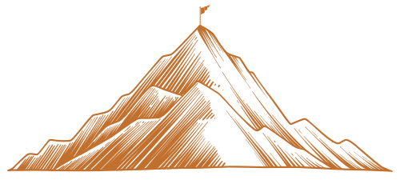

Este guia traduz a identidade de Gabriel Carneiro em regras práticas, para que toda peça, no digital ou no impresso, fale a mesma língua: direta, provocativa e sem motivação vazia.
Gabriel Carneiro não vende motivação. Ele defende que resultado é consequência de escolhas repetidas, e que isso é treinável. Toda peça deve carregar essa convicção: menos discurso, mais ação.
"Não peça para a vida ficar mais fácil. Torne-se mais forte para viver aquilo que vale a pena."
Manifesto da marca · Gabriel Carneiro
É consequência de escolha, não de sorte nem de talento nato. A comunicação foca no que a pessoa pode fazer, não no que ela sente.
É decisão diária, não traço fixo de personalidade. As peças reforçam constância e treino, não picos de euforia.
É ferramenta prática para agir melhor, principalmente quando dói. Profundidade com aplicação, nunca autoajuda genérica.
A provocação é com a acomodação, não com a pessoa. O tom desafia o leitor a assumir responsabilidade, sempre respeitando a inteligência dele. Direto, adulto, sem clichê de palco.
Frases curtas, verbo forte, zero rodeio. Vai ao ponto como quem respeita o tempo de quem escuta.
Confronta a zona de conforto e o discurso pronto. Faz perguntas que incomodam na medida certa.
Traduz o profundo em ação de segunda-feira. Nunca fica na abstração ou na frase de efeito solta.
Entende o contexto antes de propor. Sem abordagem invasiva, sem pacote engessado, sem pressão de venda.
"No palco, eu não busco agradar. Eu busco despertar."
"Eu não romantizo a realidade. Eu apresento a vida como ela é."
"Tudo é treinável. Mas treino dá trabalho."
"Crescer não é esperar o momento ideal. É decidir subir de nível."
Pequenas decisões de texto que se aplicam a legendas, artes, e-mails e materiais impressos. Quando surgir dúvida, siga estes padrões.
A assinatura de Gabriel Carneiro é um wordmark em Archivo, peso 800, caixa-alta, com espaçamento entre letras (tracking ~0.06em). Simples, firme e legível em qualquer suporte. A curadoria é sempre creditada à Polo Palestrantes.
Mantenha ao redor do wordmark um respiro mínimo equivalente à altura da letra "G". Nada invade esse espaço.
Digital: 90 px de largura. Impresso: 22 mm. Abaixo disso, a legibilidade e o tracking se perdem.
Não distorça, não incline, não troque a fonte, não aplique degradê, não use sobre foto sem contraste suficiente.
O sistema nasce do contraste entre o grafite profundo e o off-white areia. O âmbar é a cor de ênfase, usada com parcimônia para guiar o olhar. Nunca inunde uma peça de âmbar: ele vale pelo destaque.
Archivo carrega a força dos títulos e dos números. Inter garante clareza no texto e nas interfaces. Nada além dessas duas famílias.
Cantos arredondados generosos, pílulas, contornos finos e o gesto da montanha. Reaproveite estes componentes para manter a família visual coesa.
Pílula com ponto âmbar. Sempre em caixa-alta, tracking largo. Abre seções e blocos.
O círculo do ícone gira 45° no hover. Âmbar para ação principal, azul petróleo para secundária.
Contorno azul petróleo, fundo transparente, barra "/" como prefixo.
Pílulas de fundo claro para listar temas. No hover, preenchem em âmbar.
36 px em grandes blocos, 28 / 18 / 12 px em cartões e botões. Curvas generosas, nunca quinas duras.
Blocos grafite com raio de 36 px para ancorar seções-chave e criar ritmo entre áreas claras.
Traço fino (stroke ~2 px), linha aberta, estilo minimalista. Sem preenchimento sólido.
As imagens mostram Gabriel em ação e a plateia envolvida. O tratamento aplica um degradê multiplicativo (grafite para âmbar) que integra a foto à paleta e dá unidade, sem apagar o rosto.
Exemplos de referência de como combinar os elementos. Não são artes finais, e sim demonstrações da lógica: eyebrow, título forte com ênfase pontual, respiro e assinatura.
Arraste para cima e leve essa tese ao seu evento.
Uma ideia por peça. Eyebrow curto, título forte, e uma única ênfase em âmbar. Deixe respiro ao redor.
Feche sempre com "Gabriel Carneiro" e o crédito à Polo Palestrantes. Consistência acima de criatividade solta.
Se a peça poderia ser de qualquer palestrante, refaça. Ela precisa soar direta, adulta e sem motivação vazia.